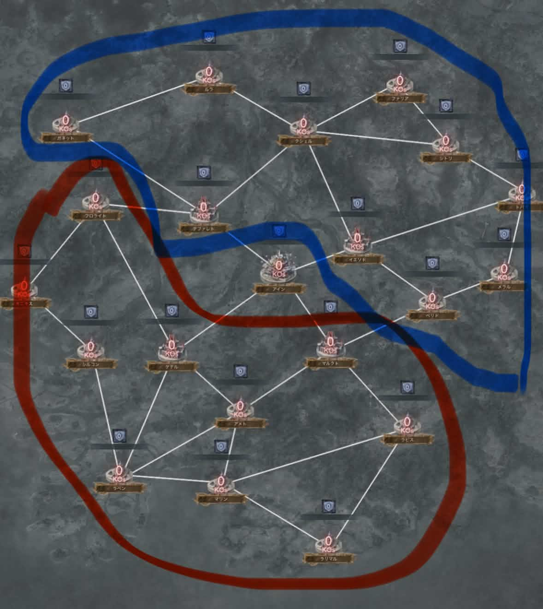
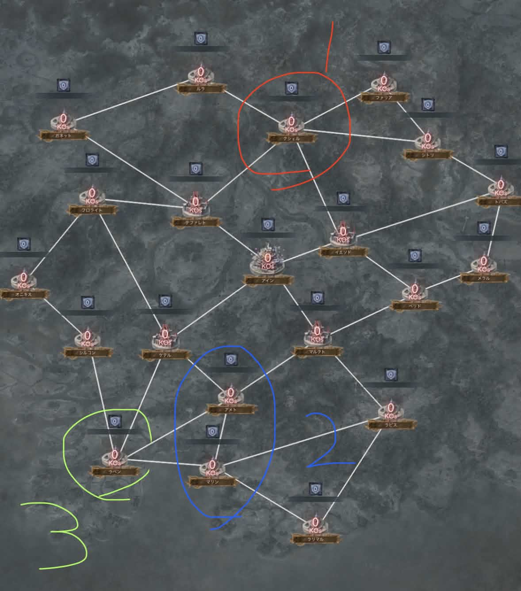

Safariを使って、Valhallaランキングをホーム画面へ追加します。
- Safariでこのランキングを開きます。
- 画面下部の共有ボタン（四角から上向き矢印）を押します。
- メニューを下へ動かし、「ホーム画面に追加」を押します。
- 名前を確認して、右上の「追加」を押します。
- ホーム画面のValhallaアイコンから起動します。

アイコンが更新されない場合
ホーム画面の古いアイコンを削除してから、上の手順でもう一度追加してください。登録済みの編成やランキングデータは消えません。

データ未取得
| # | World | ギルド | 戦闘力 | 億 | 人数 | クラス |
|---|
| # | World | プレイヤー | ギルド | 戦闘力 | 使用キャラ |
|---|
ポイントデータを読み込んでいます。
| # | ギルド | 教会 | 城 | 神殿 | 合計pt |
|---|
使用している端末を選んでください。
Safariを使って、Valhallaランキングをホーム画面へ追加します。
ホーム画面の古いアイコンを削除してから、上の手順でもう一度追加してください。登録済みの編成やランキングデータは消えません。
Google Chromeを使って、Valhallaランキングをホーム画面へ追加します。

ホーム画面の古いアイコンを削除してから、上の手順でもう一度追加してください。登録済みの編成やランキングデータは消えません。
ChromeまたはEdgeから、Valhallaランキングをアプリとしてインストールします。

初日は24P、2日目以降は28Pを毎日奪い合い、トータル164Pのうち最も多くポイントを獲得したギルドが1位になります。
各戦力帯でランダムに4つのブロックへ振り分けられます。マッチングは火曜日の7時30分に確定し、拠点の配置もそのタイミングで確定します。なお、拠点の配置も完全ランダムです。
グラバトは確定箇所を増やしてポイントを積み重ねます。例えば、その日は多くポイントを取れても、翌日に全ての拠点へ布告される状況ができてしまうと非常に悪いです。
確定地は上と下が多いため、ほとんどの強いギルドは初日の盤面を見て、上を固めるか下を固めるかを決めます。左と右に拠点が固まっている場合、左側なら下、右側なら上を布告して確定地を増やします。

上を固めるギルドは、基本的に火曜・水曜・木曜は青の箇所を重点的に布告します。下を固めるギルドは赤の箇所を重点的に布告します。
そうすると金曜日ごろに赤対青の一騎打ちが起こります。全面対決の前に、いかに上手く拠点を固められるかが肝になります。
よくあるケースが、グループ1位・2位のギルドが8位以下のギルドのみとマッチングした時です。談合側の言い分は、90％ほど強い側が「このままだとつまらないと思ったので、談合しました」といった形で、自分たちがボコボコにされるのが嫌なので、それらしいことを言ってきます。
これもかなり多いです。ポイントを取るゲームで45分縦積みをして、勝ったような動きをしてくるところがあります。これをしてくるところはグラバトがポイントの取り合いだと知らないので、適当に攻め続けて、他の拠点でしっかりポイントを取りましょう。
負けたら煽ってくるところがあります（90％以上がエキスパートとの境目のギルド）。こういうギルドは適当にあしらいましょう。
これもかなり想定されます。すごく小さなエリアで三国志が始まります。この時は報酬大量ゲットのうまうまタイムですので、いっぱい取りましょう。また、全制覇を狙えるチャンスでもあるので狙っていきましょう。

教会の優先度はこちらになります。上の要所はクシェルのみ、下は3箇所あります。
※ここは最重要な教会になります。
上記の4箇所が、グラバトの拠点における要所になります。
分からないことが多くなると思うので、少しずつ覚えていきましょう。
進行側はKO数に応じてスピード・攻撃力・防御力が低下し、このように疲弊します。上限は100のため、100以上はデバフが入りません。
防衛側は上限が200になり、進行側と同様に上限以上はデバフが入りません。
デバフが100前後になるまでメインなどの強い編成を入れず、最小編成で耐えて調整することで無駄な敗北が減ります。移動している人が頑張っても2つが限界で、3つ以上は同時に弄れません。
理解度の高いギルド同士の対決では、序盤は中間層とランカーのサブ同士の戦いになります。そのため、下の画像のような展開が10～20分近く行われます。
この形は、相手のリアルタイム参加者が20人前後の時に、相手へデバフを使わせたい場合に使います。基本的には先置きでの使用が多く、終盤に相手へデバフを使わせたい場合もこの形になる可能性があります。
相手は強い編成で攻撃すると撃ち抜いてしまう可能性があるため、早い時間には使えず、デバフを入れながら少しずつしか進めません。上が抜かれないため、下のデバフも削られません。
一定の時間になった時にすべて下げないと、強いメイン編成にすべて倒されてしまいます。
進行されている防衛の際は、基本的にこの形です。2体置きなら約20間隔、3体置きなら約14間隔で配置しています。多くのギルドが、この2つの配置を採用しています。
防衛側は1分1秒でも耐えることで、ギリギリに来る人が間に合って勝つケースや、間に合わず負けるケースが出てきます。進行側は常に時間を奪う進行を行います。そのため、進行側は5体で進行して時間を奪い、防衛側は最小編成で時間を守ります。
理由は2つあります。1つ目は、最後は進行側もデバフがなくなる可能性があること。2つ目は、相手が強い編成を序盤～中盤で使った場合、一番強い編成を抜けない可能性があることです。そのため、ギルド最強ランカーのメイン編成が先に出た側は、かなり劣勢になっている場合がほとんどです。
進行側は全編成にスピードバフ10％が付くことと、デバフの入り方が防衛側と大きく異なるためです。
デバフを入れれば、よほど戦力差がなければ落とせます。進行側・防衛側ともにMAXデバフが入れば、5倍・6倍の戦力の編成も倒せます。
例えば、総編成数が51対50で、デバフ数・戦力が同じ場合、両者が完璧に動いても50編成側は51編成側の最後のメイン編成を止められず、陥落または防衛失敗になる可能性があります。デバフは残っていても5体編成がなく、相手のメイン編成をあと少しで倒せないケースは非常に多くあります。そのため、同程度の戦闘力のメイン編成に勝てる5体編成は、多いほど有利です。
知識を身につけるかどうかは自由です。楽しく遊ぶことが一番大切です😊
理解度が広がれば別の楽しさも生まれ、うまくいけば今より楽しめる人も増えます😊
一番大切なのはリアルを優先し、メメントモリで楽しくワイワイ遊ぶことです。課金もリアルタイム参加も、無理なく楽しみましょう😊


基本的に翠パは耐久力は高いものの、遅いことが非常に多い傾向です。相性的には紅が良く、ステが1.5倍の敵を倒すデバフの目安は、進攻時40・防衛時100と言われています。
コルフロや紅のように上から殴れる編成に弱く、特に連続で当てられることに非常に弱いです。
注意：翠パはデバフを当てると回復するので、基本的に強い翠パには連続で強い5体編成を当てる必要があります。
基本的に黄パは攻撃力参照のシールド持ちなので、デバフが入ると脆くなりやすい傾向です。相性的には翠が良く、目安は進攻時60・防衛時60です。
デバフを当てて攻撃力が落ちたところを、翠で耐久したり、コルフロで上から殴り続けたりする攻め方に非常に弱いです。メルランが入っていない編成で、組み方が不十分な場合はベルで止められます。
紅パは速攻で気絶させて、上から殴り続ける編成が多い傾向です。相性的には藍が良く、目安は進攻時60・防衛時50です。
アムレート、団コル、エヴリンなどが入った硬い藍パを入れるか、デバフを当ててスピードを落としたところを、メリア・プリマ入りの速攻コルフロで上から殴る攻め方に非常に弱いです。
1回目の編成でモルガナ・アーティ以外を倒し、2回目の編成で落とすのが良いです。
藍パはシールドを張り、フローレンスを守ることに特化した編成が多い傾向です。特に相性の良い色染めはなく、目安は進攻時40・防衛時100です。
団コル、エヴリン、藍マーリン、藍フィアーが優秀なため明確な弱点はなく、デバフを当てる必要があります。また、団コルが藍全員に多重バリアを張るため、連撃がない編成では落とすのに苦戦します。
ギルバトの現環境では圧倒的に強いため、黄を当てるか、おとなしくデバフを当てましょう。相性的には黄が良く、目安は進攻時40・防衛時100です。
強い冥の場合は黄以外だと、この程度デバフを入れなければ、ステがほぼ変わらなくても普通に負けることがあります。遮断と強力なスキルを持っているので、しっかりデバフを当てましょう。
天えーに非常に弱く、ベルで止められる可能性があります。それ以外では、上から殴るしか方法がありません。
パラデアが冥の耐久力を劇的に上昇させています。パラデアが落ちている場合はコルフロでも冥を落とせますが、いる場合はおとなしくデバフを当てましょう。
コルフロはまず狩られ、完全にカモにされて終わります。この編成は翠や黄にはあまり強くないため、早めに当てて落としましょう。
強いギルドほど、編成相性をうまく当ててきます。
上記のように過剰戦力で攻めるのは基本的にNGです。よほど格下の相手でなければ良くありません。
少ないデバフで適切な編成を当てられれば、弾数の節約にもなります。強いギルドほどこれが非常に上手で、弾数が命のグラバトではここで大きな差が出ます。
強いギルドほど、メンバーの編成理解度が高い人が多いです。進攻の場合は防衛のように編成がいくつも溜まっている状態が少なく、移動などを行うことも少ないため、個々の編成理解度が試されます。
例：自分のステが4000万。相手の1番目の編成が3000万で、20番目に1.5億の編成がいる場合。
この場合は20番目の編成で必ず止まります。現状このサーバーでは、1番目の編成を抜いて終わりという人が多いです。
この先、時間に迫られて残り10秒などの戦いになった際、それによって攻撃が何秒も止まり、負けにつながります。
間違いなく止まる強い編成がある場合は、1番目を抜いた人が40デバフを入れ、足りない場合は落とす人が追加デバフを入れるのが、非常にきれいで早い形になります。（強いサブを持つランカーは除く）
進攻時はデバフが余る人が大量に出てくるため、強い編成が先にある場合は「1メイン＋8デバフ」を先に置くと、より有利になります。
防衛時にかなり多いのが、デバフを全選択で配置し、その後に編成を入れて終わる置き方です。しかし、それをすると移動を行っている人の負担が非常に大きくなります。
このように置くと、移動側が非常に作業しやすくなります。
防衛はリアタイ、事前、知識、移動など、すべてがあって成立します。移動担当の負担を少しでも減らすことで、より防衛の質を高められます。
「過剰戦力」という言葉を多く使用するので、確認のために先に説明します。
※今回は「戦力」とは戦闘力ではなく、その編成が倒せるメインの戦闘力として説明します。
戦闘力1.5億のサブ編成が、直当てで1億までしか倒せない場合、戦力は1億で計算します。
本内容では、目に見える戦闘力の方が分かりやすいため、戦闘力での計算を使用しています。
過剰戦力とは、主に進攻時に多く使用する言葉です。
過剰戦力が起こりやすい例（これらに含まれないケースもあります）
このように、さまざまなケースで起こります。
（過剰戦力 下記写真）
例：上記写真参照
2つの戦闘だけで2.6億の差が生まれています。
これが5回あれば、13億の過剰が発生します。これが過剰戦力が駄目な理由です。
（2つの編成の進攻結果）
左の編成は一度4000万のメインに当たっていますが、ほかはデバフのみ、右の編成はデバフのみで止められています。
この場合、2つの進攻編成は、防衛編成と同ステの編成が進攻してきた時と変わらない貢献しかしていません。
この差が戦力過剰分になります。
こういったケースでは、逆に過剰戦力が推奨されます。
拠点を落とさないように進攻を行います。
相手の防衛編成がすべて見えている状態なので、過剰戦力は基本的にNGです。
※相手のランカー編成が連なっている際など、状況によっては過剰戦力が有効な時があります。
自ギルドが進攻を行っている際、次に止まる防衛編成を見て入れます。
例
1番目のもこもこさんを抜いた後に、どてちゃんで止まると想定します。
この際、次に止まる編成が分かっているので、次に入れる人は、どてちゃんの編成を抜く編成を進攻に入れて用意します。
移動で止められる編成が変わった場合は、その編成に合わせて次の編成を撃ちます。
進攻側は後出しジャンケンを繰り返すことが、最速かつ最も効率良く進攻を行う方法です。
今後、進攻側は基本的に移動を行えないケースが増えます。そのため、最低限20・40・60・80・100デバフを当てた時、相手の戦力がどれくらい落ちるかを覚えておくと良いです。
デバフによる減少量が分からないと、自分の編成の強度が分かっていても意味のないものになり、無駄なデバフが増えてしまいます。
例：本来40デバフで良いところを分かっていないと、60や80入れてしまう。
防衛との一番の違いがここです。
防衛は、編成知識がある人が移動を行い、適正なデバフで落とす動きを専属で行うことが主なので、適当に入れてしまっても上手く使ってくれる環境です。
進攻は編成が貯まらないため、編成を置く側に知識がないと無駄が圧倒的に増えます。
進攻は防衛と違い、1秒間にスタミナを5消費します。進攻が下手なギルドほど、自分で自分の首を絞める形になります。
メインが被ってしまった際、次の防衛編成で前の編成と次の自分の編成が負けると分かっていても、何もしようとしない人が多いと苦しくなります。
では、どうすれば良いのか？ 被って入れてしまった際は、基本的に後に入れた人がデバフを入れて調整を行います。
例
2億の編成に2つとも負けるとします。この場合、2番目の人がデバフを入れるようにしてください。
この状態の時にデバフを入れてくれる人はほぼいないため、自分で守ってください。ただし、編成の多いランカーはデバフが圧倒的に少ないので、全員でフォローしましょう。
進攻側には後出しジャンケンの権利が基本的にあるので、よほど時間が迫っていない限り、積みすぎないことが鉄則です。
基本的に2〜3編成（進攻編成を含む）が理想です。止まりそうな編成を見てデバフを入れることを繰り返すため、デバフ込みでも多くて10前後にします。または、止まる編成が来た瞬間にデバフを当て、編成で即座に落とします。
これが基本的な進攻の仕方です。
※まず、これを頭に入れておいてください。
主力のメインは終盤に撃ちましょう。
序盤に主力メインを撃った場合（主力戦力2億メイン想定）
防衛側の指揮官
中盤・終盤の場合（主力戦力2億）
防衛側の指揮官
防衛側視点：序盤
防衛側視点：中盤・終盤
移動の理由は3つあります。
例
W178ではありえませんが、7億のメインがある人がこの状態で攻めてきた場合、すべて落ちてしまいます。
この編成をすべて活かすために移動を行います。
1.2億編成が2つ進攻してきた場合。
ギルドA：移動なし
トータルスタミナ：166消費
ギルドB：移動あり
トータルスタミナ：86消費
簡単な例ですが、よくある状況で、後者はスタミナ80分をより有利に使えます。これが積み重なり、大きな差になります。
例：進攻3億の翠メイン
この場合、40番目の編成を最速で上げることにより、後出しジャンケンをしてきた相手に、さらに後出しジャンケンを行えます。仮に入っていない場合は、最後に入ると仮定します。
キープ数が少ないほど、後出しジャンケンの後出しを有効に行えます。
移動は約40デバフごとに編成を置きます。
例：40キープ時
40キープ時の理想範囲は次のとおりです。
この範囲を超えると過剰になります。過剰になった際は、デバフを多く入れて調整する必要があります。
防衛時によくあるパターンが編成被りです。
例1：城40キープ
例2：城40キープ
ステータスや編成の中身が若干違うことはありますが、このように投入されている編成自体が被ることがあります。
例1は団コル入りのフロパ、例2は最速のコルパが来ると、デバフが入っていても乱数で2つとも抜かれる可能性があります。
そのため、違う5体編成の投入や、属性パのサブを入れてもらうなどの対処が必要です。
メインは基本的に装備が付いていると思います。装備が付いていれば、相性の良いサブパなども止められるので、そのまま出すことを推奨します。
サブパとは、相乗効果のあるキャラ同士で編成し、最低限アタッカーにはルーンまたは装備のどちらかが付いている編成を指します。
何も積んでいない色合わせは、よほど高レベルリンクを持つ人以外、基本的にはデメリットしかないデバフです。
理由
何も付いていない相乗効果のみの編成は、コルフロの場合は相手の半分程度、色染めメインの場合は約3倍の戦力がなければ、ほぼ止まらないと考えてください。
ステータス差があっても、ルーンや装備が付いていれば、その差をひっくり返せます。
強度の高いサブパが多いほど、移動側は考えることが減り、より良い当て方ができます。
※ギルドUさんの場合
装備を積んでいない色合わせ5体が、15編成以上防衛で飛んできます。15×5×2＝150以上のスタミナが、時間をほぼ稼げずに溶けています。
本来守れる時間
実際：150÷5＝30秒
これだけ無駄にしていると、本来守れる可能性がある箇所も守れなくなります。
グラバトにおいてスタミナ150は非常に価値が大きいため、これを機に一度、自分の編成を見直してください。
防衛において、時間を1秒でも多く守ることは非常に価値が高いです。
・20%オフの雫購入は、なるべくダイヤがあれば購入しましょう。購入を全くせずにいると途中から育成が進まず、かなり困ったことになります。
（割引のない雫は自由）
・コインは余るため、ナヘマの装備や180装備がコインで買える時は買っておくと、サブの編成や魔装などで使えます。
・ボックスに上級箱が50個貯まれば、封印の鍵ギフトの購入は必須です。その他はダイヤと相談してご購入ください。
・スピルンまたは貫通のみ購入してください。
・ルーンチケットのみ購入してください。（貯まり次第、即購入）
・星の導きチケットを最優先！ 購入済みでコインが余る場合は更新。コルディがLR5になっていない場合は、更新せずコルディと交換でも良いです。
・バトルコインは雫と交換される方が多いですが、1番良いのは初級鍵です。計算方法は下記になります。
| 交換品 | 交換内容 | ダイヤ換算 |
|---|---|---|
| 雫 | 5個 | 2,000ダイヤ 1個＝400ダイヤ |
| 初級鍵 | 30本 | 750ダイヤ 1本＝25ダイヤ |
| 雫 | 16,000コインで1個 | 400ダイヤ |
| 初級鍵 | 1,300コインで5本 | 125ダイヤ |
| 同程度のコインで比較 | 雫1個／初級鍵60本 | 400ダイヤ／1,500ダイヤ |
初級鍵の方が、ダイヤ換算した場合は圧倒的に良いです。初級鍵はとてつもなく余るため、交換し続けることも可能です。
例として、AさんとBさんがいて、最大ステは同じ1億とします。
メインのみ：1億
アタッカー：貫通11・11・11／スピード11・11・11
メイン：8000万 アタッカー：貫通10・10・10／スピード10・10・10
サブパ①：7000万 アタッカー：貫通9・9・9／スピード9・9・9
サブパ②：7000万 アタッカー：貫通9・9・9／スピード9・9・9
どちらの方がギルバトで有利か？ この場合、間違いなくBさんの方が有利です。
現178は過剰戦力で上からメインで叩き、無駄にメインがデバフを喰らい、簡単に落とされる傾向があります。
過剰戦力例
この攻め方をした時は、適度にルーンや装備を積んだ編成を当てれば、大体のケースでメインとほとんど変わらないデバフ数が稼げます。
相手メインやサブが連なっていることは少なく、必ず編成間にデバフがあるため、ほぼ変わらないケースが多いです。（トップランカーは除く）
サブパが多ければ多いほど、デバフは削れます。
例の2人で例えると、Aさんのメインは1回100KO平均で稼げ、Bさんのメインは1回80KO平均、サブパは1回20KOします。
Aさんはメイン2周で200KOを稼ぎ、活躍中プレイヤーにも名前が載るため派手に見えます。ただ、活躍中プレイヤーに載っていないBさんはトータルで240KOできます。
このように、サブパが多い方が臨機応変な対応ができ、デバフを当てれば相手のメイン編成を落とすこともできるので、編成が多い人は非常に重宝されます。
サブパがあれば過剰戦力を投入せずに相手の編成やデバフを削れるため、メインに当てられるデバフが少なくなり、よりメインが活躍できる環境を作れます。また、相手の編成が少ない場合は編成切れを狙えます。さらに、相手による相性の悪い編成の即当て防止にもなります。
上記の理由で、サブパは多い方が良いです。
サブパは必ずアタッカーにルーンと装備を最低限積み、相乗効果をもたらすキャラを入れる必要があります。
レベルリンク差やまだ装備が追いついてない人が多いので、たまーに勝ててるだけで後1〜2ヶ月するとさらに勝てない、時間も稼げないゴミです。
※色合わせの編成は基本的にサブパではありません。（高レベルリンカーは除く）
まず、アタッカーのいない編成は、よほどレベルリンクが高いか、キャラ愛が強くガッツリ装備を積んでいない限りありえません。私がやっている簡単なサブパを紹介します。
現状キャラが出ていないので、いらないキャラもいますが、キャラとルーンです。
フロパメインで、サブパのコルパと紅パはデバフを40当てれば、同ステにも相性によっては勝てます。私のギルバト編成はすべてアタッカーをサポートする編成になっています。
1枚必須キャラはほとんどアタッカーに相乗効果を与えるものなので、ギルバトのサブパでも1枚でも使えます。サブパはメインパとは違う楽しみ方もできます。
上記がサブパの最低条件になります。（高レベルリンカーは除く）
皆さんも良いサブパを使って、サブパでの模擬戦やKO稼ぎなど、いろいろな楽しみ方を見つけてもらえたらと思います。
教会・城・神殿は1：5：10（盟約特権を含まない）
以下の（ ）内数値はギルドコイン取得量です。
結果として、Valhallaは他ギルドより300枚以上ルンチケのアドバンテージが取れる。
開設から半年が経ち、クエストと塔が落ち着いた時、無微課金がギルバト外で取れるルンチケの平均値が200〜500枚（幻影や箱の乱数により上振れ・下振れあり）になった際、他ギルドの人は1ヶ月で良い乱数でも9ルーンを1つ取れるか取れないかですが、Valhallaは1ヶ月で2個取れる可能性があり、大きなアドバンテージが取れます。
ルンチケが取れることにより、中間層以下に大きな差がつき、上位ギルドと下位ギルドの差がより広がり、1強が進みます。
指揮官が何をしているのか？
何をしないといけないのか？をざっくり説明します。
※指揮官は拠点数が多くなれば成る程、盤面把握が困難になります。
現在、新キャラ情報はありません。
コメントを読み込んでいます…
MM Tools
MMのグラバトグループのギルド戦力ランキングと、各ギルドに所属する個人戦力ランキングエントリープレイヤーのリストを手軽に閲覧できるツールです。
グラバトグループを開く総合情報サイトです。
めんてもりもりを開くウルトラセールの確認によく使われるサイトです。
めんてもりもりと提携しているので、基本的にここを起点にメメモリサイト巡回を始めるとよいです。
隠れ木のタマ様を開くサイト名そのままのサイトです。グラバトでの取得ポイントをエミュレートできます。
紹介ページを開く全サーバーのギルバト拠点占有率を大まかにまとめたサイトです。
どのサーバーでどのギルドが強いのか、1強状態になっているかなどを確認できます。
紹介ページを開く現存しているメメモリ全サイトの中で、最も正確な情報を配信しているサイトです。
膨大な情報を正確な計算式で数値化しているので、時間があるときにゆっくり見ることを推奨します。
ワーズを開くキャラガチャ復刻カレンダーです。
カレンダー以外にも各種情報がありますが、間違いが非常に多いため、基本的に復刻カレンダー以外は参考にしないでください。
復刻カレンダーを開く